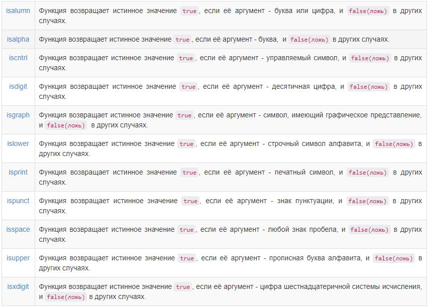

Основы алгоритмизации и программирования
Строки и строковые функции
Edward & Albert / github:Tgjmjgj
Содержание лекции
Строки
В С++ существует два основных вида строк:
- Из С: встроенный строковый тип, строка как массив символов
- Из С++: строка в виде класса string
Класс string гораздо удобнее в использовании и предоставляет больше возможностей, и именно поэтому мы его рассматривать не будем)
Встроенный строковый тип
- Строка символов хранится в памяти как массив
- Количество элементов в таком массиве на один элемент больше, чем изображение строки, т.к. в конец строки добавлен '\0' (нулевой байт или нуль-терминатор)

Инициализация строк
Поместить строку в массив можно либо при вводе, либо с помощью инициализаций:
char str1[] = "This is string";
char str2[20] = { 'S', 't', 'R', 'i', 'N', 'g', '\0' };
const char *str3 = "string\n";
char str4[20];
cin >> str4; // если ввести больше 19 символов, выдаст ошибку
Типичной ошибкой является невыделение достаточного места в массиве символов для хранения нулевого символа, завершающего строку.
Ввод строки с клавиатуры
Удобным методом ввода строки является функция cin.getline. Она имеет три аргумента: массив символов, максимальный размер и символ-завершитель.
char str1[80];
cin.getline(str1, 80, '\n\);
cin.getline(str1, 80);
Функция прекращает считывать символы если встречается символ-ограничитель '\n' и если количество считанных символов оказывается на один меньше, чем указано во-втором аргументе. Третий аргумент имеет '\n' в качестве значения по умолчанию, так что в вызове функции его можно опустить.
Коды символов
Манипуляции со строками и символами на самом деле подразумевают манипуляции с соответствующими численными кодами, а не с самими символами.При сравнении двух символов сравниваются их численные коды
| '0' - '9' | 48 - 57 |
| 'A' - 'Z' | 65 - 90 |
| 'a' - 'z' | 97 - 122 |
| 'А' - 'Я' | 128 - 159 |
| 'а' - 'п' | 160 - 175 |
| 'р' - 'я' | 224 - 239 |
Примеры использования кодов символов
Например, для получения символа десятичной цифры из значения целой переменной, лежащей в диапазоне 0…9, а также значения целой переменной из символа десятичной цифры можно:
int n = 5;
char c;
c = n + '0'; // получаем из числа символ
if (c >= '0' && c <= '9')
n = c - '0'; // получаем из символа чисало
Примеры использования кодов символов 2
Для преобразования строчной латинской буквы в прописную необходимо:
char c;
if (c >= 'a' && c <='z')
c = c - 'a' + 'A';
Обработка строк
Перебор символов строки может происходить как при помощи индексного обращения, так и при помощи адресной арифметики
char str1[] = "string";
while (*(++str1))
{ ... }
Поскольку конец строки обозначается специальным нуль-символом, именно он будет являться условием завершения перебора в таком цикле.
Использование индексов
Аналогичный цикл для обработки строки через индексы будет выглядить следующим образом:
char str2[] = "string";
for (int i = 0; str2[i] != '\0'; i++)
{ ... }
-
Если указатель на строку имеет нулевое значение
char *pstr1 = 0; - Если строка не содержит ни одного значащего символа, только символ конца строки
char *pstr2 = "";
Типичные ошибки
Использование строк встроенного типа чревато ошибками из-за слишком низкого уровня реализации и невозможности обойтись без адресной арифметики.
const char *str = "\nstring\n";
int length = 0;
while (++str) // бесконечный цикл
{ length++; }
Указатель str не разыменовывается, следовательно, на равенство 0 проверяется не символ, а сам указатель. Поскольку изначально этот указатель имел ненулевое значение (адрес строки), то он никогда не станет равным нулю, и цикл будет выполняться бесконечно.
Примеры обработки строк
Поскольку строка представляет собой последовательность символов, большинство программ, обрабатывающих строки, используют посимвольный просмотр строки.
В качестве примера рассмотрим алгоритм удаления лишних пробелов из строки:
char str1[] = "This is string";
char str2[10];
int i, j;
for (j = 0, i = 0; str1[i] != 0; i++) // Цикл для посимвольного перебора строки
{
if (str1[i] != ' ') // Если текущий символ не пробел
{
if (i != 0 && str[i-1] == ' ') // Если текущий символ - первый в слове
{
str2[j++] = ' '; // Ставим пробел
}
str2[j++] = str1[i]; // Переносим символ в выходную строку
}
}
str2[j] = '\0';
Примеры обработки строк
Рассмотрим пример проверки правильности расстановки круглых скобок в строке:
char s[256];
int i, c;
std::cout << "Введите строку:" << std::endl;
gets(s); // Вводим строку
for (c = i = 0; s[i] != 0; i++)
{
if (s[i] == '(') // Если скобка открывающаяся
{
c++; // Увеличить счётчик
}
if (s[i] == ')') // Если скобка закрывающаяся
{
c--; // Уменьшить счётчик
}
}
if (!c) // Если c == 0, значит количество скобок сбалансированно
{
std::cout << "Одинаковое количество скобок" << std::endl;
}
else
{
std::cout << "Разное количество скобок" << std::endl;
}
Функции работы со строками
Стандартная библиотека С предоставляет набор функций для манипулирования строками
- #include <string.h> - основные функции для работы со строками
- #include <ctype.h> - проверка символов
- #include <stdlib.h> - преобразование типов
Библиотека string.h предоставляет функции копирования, объединения, разделения строк, поиска символов, подстрок и др.Библиотека ctype.h содержит функции классификации символов (буква, цифра, спец.символ).
В библиотеке ctype.h в контексте строк содержатся функции приведения к другим типам.
Функции библиотеки string.h

Функции библиотеки string.h 2

Функции библиотеки ctype.h
Функции библиотеки stdlib.h

Особенности строковых функций
Строки при передаче в функцию в качестве фактических параметров могут быть определены либо как одномерные массивы типа char[], либо как указатели типа char*. В отличие от массивов, в этом случае нет необходимости явно указывать длину строки.
Для указателя с типом указуемой переменной char допускаются различные интерпретации: указатель на отдельный байт; указатель на область памяти – массив байтов; указатель на отдельный символ; указатель на массив символов.
Функция strlen
int strlen(char* s);
Одна из самых часто применяемых функций, возвращает фактическое количество символов в строке, без учёта нулевого символа.
char *pstr1 = ""; // strlen(pstr1) = 0
char str2[100] = "str"; // strlen(str2) = 3
Функция strcpy
char* strcpy(char* dest, const char* src);
Функция strcpy копирует содержимое строки src вместе с нулевым символом в строку dest. Возвращает указатель на строку dest.
char str1[] = "Опоссумы";
char str2[20];
strcpy(str2, str1); // str2 = "Опоссумы"
Функция strncpy
char* strncpy(char* dest, const char* src, size_t num);
Тип size_t - прописанный в этой библиотеке синоним типа unsigned int.Функция копирует первые num символов их строки src в строку dest. Если строка меньше указанной длины num, она копируется до символа конца строки. В ином случае символ конца строки следует добавлять вручную.
char str1[] = "Первый или последний";
char str2[20];
strncpy(str2, str1, 6); // str2 = "Первый"
str2[6] = '\0'; // Добавляем в конец строки нулевой символ
Функция strcat
char* strcat(char* dest, const char* src);
Функция добавляет копию строки src в конец строки dest, и возвращает на нее указатель.
char str1[];
char str2[20] = "Объединение";
strcat(str1, str2); // str1 = "Объединение"
strcat(str1, " строк"); // str1 = "Объединение строк"
Функция strncat
char* strncat(char* dest, const char* src, size_t num);
Функция добавляет первые num символов строки src в конец строки dest, плюс символ конца строки. Как и везде, возвращает dest.
char str1[20] = "Hello";
char str2[] = "My World!!!!!";
strncat(str1, st2 + 2, 5); // str1 = "Hello World";
Функция strcmp
int strcmp(const char* str1, const char* str2);
Начиная с первых символов функция сравнивает поочередно каждую пару символов строк str1 и str2.
Так продолжается до тех пор, пока не будут найдены различные символы или не будет достигнут конец строки.
Функция возвразащает 0 в случае равенства строк.
Пример
char scissors = "Ножницы";
char answer[100];
std::cout << "Отгадай загадку:" << std::endl;
do
{
std::cout << "Два кольца, два конца, посередние гвоздик." << std::endl;
std::cin.getline(answer, 100, '\n');
} while (strcmp(scissors, answer) != 0); // Пока слово не угадано, цикл будет продолжаться
std::cout << "Правильный ответ" << std::endl;
Функция strchr
char* strchr(const char* s, int c);
Функция strchr ищет первое вхождение символа, заданного параметром c в строке s.В случае успеха возвращает указатель на первый найденный символ, в случае неудачи - NULL.
Функция strrchr
char* strrchr(const char* s, int c);
Работает по принципу предыдущей, только ищет не первое, а последнее вхождение символа.
char str[] = "Char search";
printf("%s\n", strchr(str, 'r')); // Напечатает "r search"
printf("%s\n", strrchr(str, 'r')); // Напечатает "rch"
Функция strstr
char* strstr(const char* str1, const char* str2);
Функция находит первое вхождение строки str2 в строке str1 без учёта нулевого байта. В случае успеха возвращает указатель на найденную строку, иначе - NULL.
using std::cout;
char str[] = "При сборе файлов имя папки имеет значение пробела или NULL";
cout << strstr(str, "или") << '\n'; // Выведет "или NULL"
Функция strtok
char* strtok(char* str, const char* delim);
Функция strtok выполняет поиск лексем в строке str. Последовательный вызов этой функции разбивает исходную строку на подстроки, которые представляют собой последовательности символов, разделенные символами разделителями delim.На первый вызов, функция принимает строку str в качестве аргумента, чей первый символ используется в качестве начальной точки для разбиения. В последующие вызовы, функция ожидает указателя NULL вместо первого параметра и использует позицию сразу после окончания последней выделенной подстроки как новое местонахождение для сканирования.
Пример использования функции strtok
Представленная ниже программа разбивает вхоную строку на слова, разделителями служат знаки пробела и пунктуации.
char str[] = "Надежда - словно нить, протянутая сквозь человеческую жизнь, держит на себе все стремления и движения мира.";
std::cout << "Разделение строки " << str << "на лексемы:\n";
char* pch = strtok(str, " ,.-:!");
while (pch != NULL)
{
std::cout << pch << '\n';
pch = strtok(NULL, " ,.-:!"); // Повторный вызов функции strtok для получения слудующей подстроки
}
Функции классификации символа
- isalpha() - проверяет принадлежность символа к множеству букв A..Z, a..z
- isdigit() - проверяет принадлежность символа к множеству цифр 0..9
- isupper() - проверяет принадлежность символа к множеству букв верхнего регистра A..Z
Все подобные функции имеют одинаковые сигнатуры вызова: принимают в качестве аргумента символ, и в случае проверки возвращают значение истины.
Функции изменения регистра
Для удобства изменения регистров буквенных символов существуют функции:
- tolower() - для уменьшения регистра
- toupper() - для увеличения регистра
Функции параметром принимают символ. Если его можно преобразовать по регистру, возвращают значение преобразованного символа. Если преобразовать нельзя - возвращает исходный символ.
char symb = 'T';
printf("%c\n", tolower(symb)); // Выводит 'т', но symb остается 'T'
symp = (char)tolower(symb); // symb = 'т'
Функции преобразования строк
Функции преобразования строк из библиотеки stdlib преобразуют строки цифр в целые значения и значения с плавающей точкой, и наоборот.
Функции преобразования строки в число
Преобразование строки в число:
- Целое: int atoi(char* str)
- Длинное целое: long atol(char* str)
- Действительное: double atof(char* str)
При возникновении ошибки данные функции возвращают значение 0.
Функции преобразования числа в строку
Преобразование числа в строку:
- Целое: char* itoa(int val, char* dest, int rad)
- Длинное целое: char* ltoa(long val, char* dest, int rad)
- Действительное: char* ftoa(double val, char* dest, int prec)
В случае преобразования целых чисел используется новый аргумент rad, который определяет, в какой системе счисления записано конвертируемое число.Для преобразования действительных чисел третий параметр prec означает точность, иначе говоря, количество сохраняемых знаков после запятой.